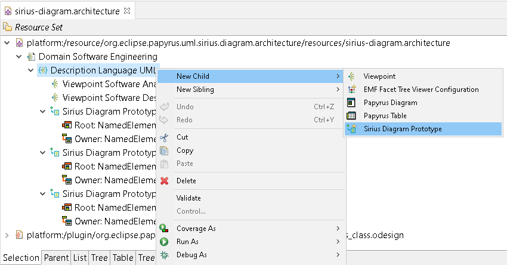
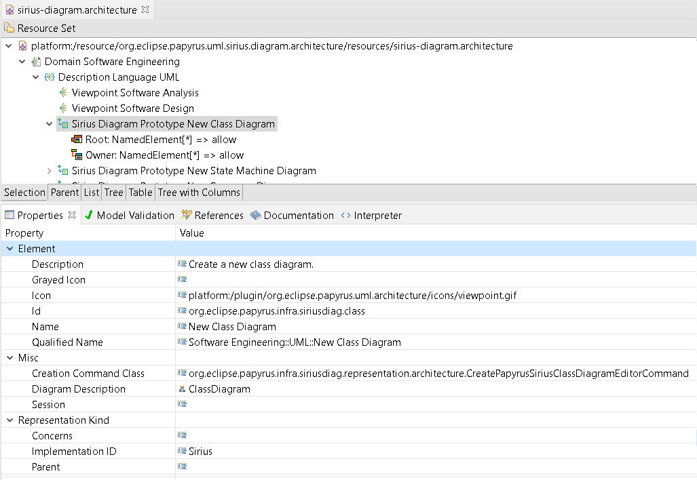
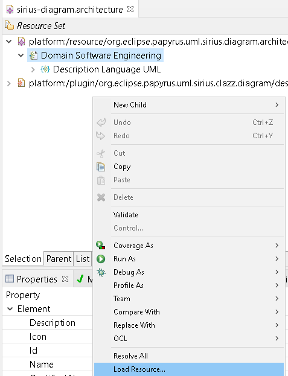
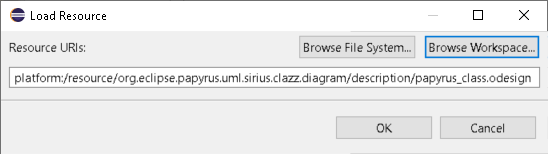
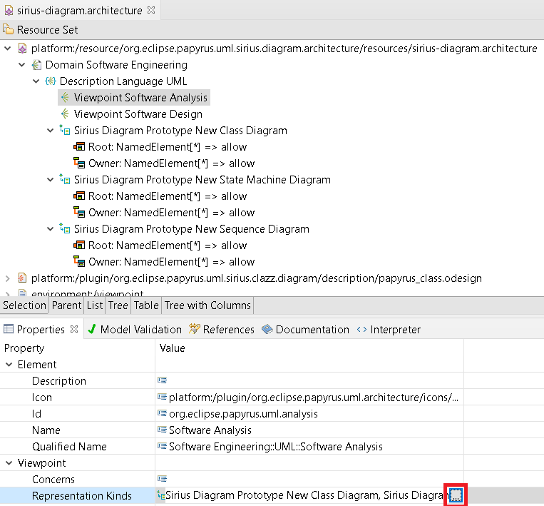
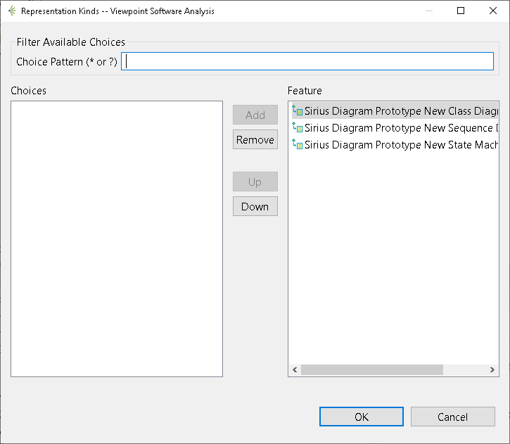
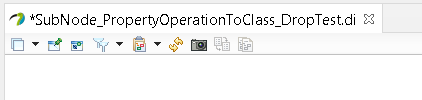

This framework has been developed to be used only when a sirius diagram is opened.
Each new diagram contribution is added in a new plugin, which contains the description of the mapping, the filters and the tools available for this diagram.
For more information about viewpoint description, you can have a look at the sirius documentation available here: https://www.eclipse.org/sirius/doc/specifier/general/Specifying_Viewpoints.html
Note that each viewpoint shall reuse:
The editor provided to edit the DocumentStructureTemplate metamodel is not exactly the version generated by EMF. We customized it in order to use a TransactionalEditingDomain (to ease the Papyrus integration).
When we add a new Sirius diagram, we shall create a new Sirius diagram prototype:

Once the Sirius Diagram Prototype has been created, it shall be defined as in the following picture:

To be able to reference the corresponding Diagram Description, it shall first be loaded in order to reference it. This can be done as in the following image:

And select the corresponding *.odesign file using the Browse Workspace:

Once the Sirius Diagram Prototype has been created. We shall select on which viewpoint this representation shall be allowed. To do this, select the viewpoint and add a Representation Kinds:

And simply select the diagram prototype that was created on the previous step.

This shall be done for both Analysis and Design viewpoint.
In the org.eclipse.papyrus.infra.siriusdiag.representation.architecture plugin, a new class extending the AbstractCreateSiriusDiagramEditorCommand shall be created. This class will manage the condition of the creation of the diagram and the action to execute before creating it depending on the context.
For example, a sequence diagram can be created directly under an interaction without prior action, but if we want to create it under a Model, an interaction shall be created before and defined as the root of the diagram.
To use the same transactional editing domain than other papyrus services, we had to override the default sirius session and creation. This is done by the PapyrusSessionFactory which allows to create PapyrusSession (which are just sirius session with the right TransactionalEditingDomain).
For new services using session, it is recommanded to use the SessionService provided in the org.eclipse.papyrus.infra.siriusdiag.ui plugin.
Benpoints mapping is used to draw a Benpoint node at the intersection of edges when the Benpoints filter is activated.
Hyperlink node is used to add a node in the diagram that allows to navigate to other representation.
In some sirius diagrams, for several purpose (region management, bendpoints and sequence diagram reorder), the post refresh behavior of sirius diagrams have been overriden.
To override this behavior, we have used the following extension point org.eclipse.sirius.refreshExtensionProvider.

The class diagram code is located in the org.eclipse.papyrus.uml.sirius.clazz.diagram plugin.
The diagram description is located in the papyrus_class.odesign:
The Class layer defines all the mapping and tools specific to the class diagram:
The State Machine diagram code is located in the org.eclipse.papyrus.uml.sirius.statemachine.diagram plugin.
To handle the specific behavior of Region, since both VerticalStack or HorizontalStack children presentations could not handle the mixed behavior of region (sometimes vertical and sometimes horizontal). Hence, the Freeform children presentation is used combined to a manageRegionPresentation and setChildRepresentation method that allows to chose between either horizontal and vertical.
The diagram description is located in the papyrus_statemachine.odesign:
The State Machine layer defines all the mapping and tools specific to the state machine diagram:
The Sequence diagram code is located in the org.eclipse.papyrus.uml.sirius.sequence.diagram plugin.
The diagram description is located in the papyrus_sequence.odesign:
The Sequence layer defines all the mapping and tools specific to the Sequence diagram:
Code in org.eclipse.papyrus.uml.sirius.xtext.integration.ui override classic editpart to add an xtext parser on each label edition.
The common method to create new tests for sirius diagram is located in org.eclipse.papyrus.siriusdiag.junit.utils. In this plugin, the SiriusDiagramEditorFixture provide all the method to load model, ope session, tests tools that will be used in the several test case.
Each specific diagram is tested in a specific plugin. Those tests include: